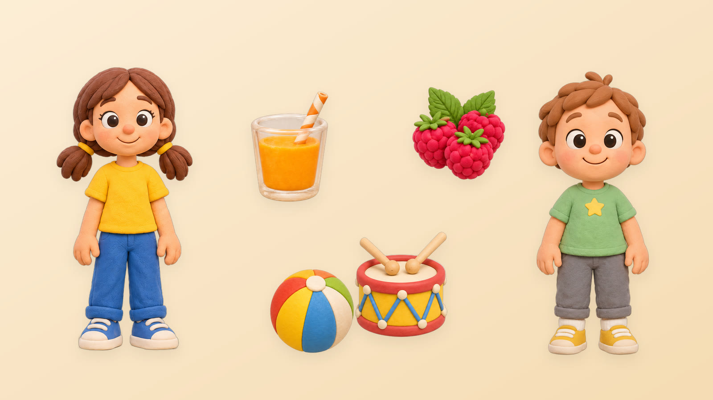

Как устроен набор
Все 20 упражнений сделаны в одном стиле и открываются в браузере: на компьютере, планшете и телефоне. Регистрации нет. Упражнения сгруппированы по этапу речи, поэтому подобрать нужное можно быстро.
Запуск речи и доречевые навыки (малыши)
- «Кто как говорит»: звукоподражания, настоящие звуки 10 животных, узнавание по звуку.
- «Дуем и плывём»: речевое дыхание и голос, работает с микрофоном или кнопкой.
- «Голосовой зверёк»: любой звук оживляет зверька, мотивация к вокализации.
- «Хочу!»: просьба «дай» словом, жестом или картинкой.
- «Что звучит?»: слуховое внимание, бытовые звуки, выбор из трёх картинок.


Слоги, артикуляция, внимание (3+)
- «Слоговая структура слова»: 4 уровня, 24 слова, слогоделение и режим «Собрать слово».
- «Звуки и слоги»: гласные, прямые слоги, ПА-ТА-КА, глухие и звонкие, стечения.
- «Найди пару»: внимание и память со слоговой структурой слова.
- «Где мячик?»: предлоги в, на, под, за, около.
- «Рассказываем по картинкам»: сюжетные картинки, ответы на вопросы, рассказ.
- «Туалетные дела Тёмы»: последовательность действий и бытовой словарь.
Грамматика, связная речь, эмоции, понимание речи
- «Один день в детском саду»: предлоги, падежи, рассказ, режимы «Обучение» и «Диагностика».
- «Чья вещь? Кому отдадим?»: род, число, падежи, притяжательные местоимения.
- «Кто что чувствует?»: эмоции, причины, что сказать в трудной ситуации.
- «Что здесь не так?»: нелепицы, объяснение, исправление предложения.
- «Расскажи по картинке»: описательный рассказ по плану, 6 карточек (животные и предметы).
- «У него или у неё?»: местоимения он и она, 12 заданий.
- «Один — много»: единственное и множественное число, 10 пар, озвучка задания.
- «Выбери правильную картинку»: понимание обращённой речи, назначение предметов, 10 заданий.
- «Кто что делает?»: предложения по сюжетной картинке, глаголы, 10 картинок.
Как использовать на онлайн-занятии
- Откройте занятие и покажите экран ребёнку или отправьте ссылку родителю, чтобы ребёнок играл сам, а вы подсказывали по видеосвязи.
- Работайте с одним занятием на цель. Например, слоговая структура или предлоги, а не всё сразу.
- Дожидайтесь ответа. В каждом занятии есть шаги «Как проводить», где указаны паузы и подсказки.
- Используйте как разминку или закрепление. Занятие на 5–10 минут удобно вставить в середину сессии, чтобы сменить вид активности.
- Давайте родителям домашнюю версию. Ссылка на занятие работает без регистрации.
Занятия не заменяют логопедическое обследование и работу специалиста: это материал для вашей работы, а не диагностика.
Вопросы и ответы
Нужно ли что-то устанавливать?
Нет, занятия открываются в браузере. Для некоторых нужен доступ к микрофону, но есть ручной режим.
Подходят ли занятия для очной работы?
Да. Можно показывать на планшете или ноутбуке во время очного приёма.
Они бесплатные?
Да, все занятия открыты без регистрации и оплаты.
Статья носит общий информационный характер, не заменяет консультацию специалиста и не ставит диагноз: диагноз ставит врач. Если вы тревожитесь за ребёнка, обратитесь к педиатру, неврологу или другому врачу.
Больше разборов про запуск речи, поведение и туалетный навык: в Telegram и VK Александры.
Telegram VK